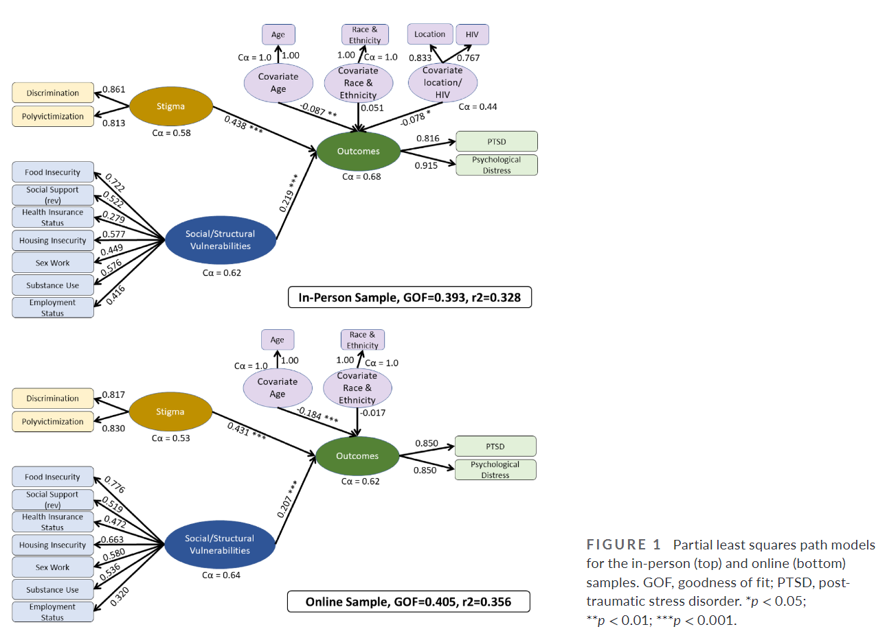

![]()
Citation
Sherman, A. D. F., Higgins, M. K., Balthazar, M. S., Hill, M., Klepper, M., Schneider, J. S., Adams, D., Radix, A., Mayer, K. H., Cooney, E. E., Poteat, T. C., Wirtz, A. L., & Reisner, S. L. (2023). “Stigma, social and structural vulnerability, and mental health among transgender women: A partial least square path modeling analysis”. In Journal of Nursing Scholarship (Vol. 56, Issue 1, pp. 42–59). Wiley. https://doi.org/10.1111/jnu.12906
Featured Figure

Abstract
Introduction
Existing literature suggests that transgender women (TW) may be at high risk for adverse mental health due to stress attributed to combined experiences of stigma and complex social and structural vulnerabilities. Little research has examined how these co-occurring experiences relate to mental health. We aimed to test a theoretically driven conceptual model of relationships between stigma, social and structural vulnerabilities, and mental health to inform future intervention tailoring.
Design/Methods
Partial least square path modeling followed by response-based unit segmentation was used to identify homogenous clusters in a diverse community sample of United States (US)-based TW (N = 1418; 46.2% White non-Hispanic). This approach examined associations between latent constructs of stigma (polyvictimization and discrimination), social and structural vulnerabilities (housing and food insecurity, unemployment, sex work, social support, and substance use), and mental health (post-traumatic stress and psychological distress).
Results
The final conceptual model defined the structural relationship between the variables of interest within stigma, vulnerability, and mental health. Six clusters were identified within this structural framework which suggests that racism, ethnicism, and geography may be related to mental health inequities among TW.
Conclusion
Our findings around the impact of racism, ethnicism, and geography reflect the existing literature, which unfortunately shows us that little change has occurred in the last decade for TW of color in the Southern US; however, the strength of our evidence (related to sampling structure and sample size) and type of analyses (accounting for co-occurring predictors of health, i.e., stigma and complex vulnerabilities, reflecting that of real-world patients) is a novel and necessary addition to the literature. Findings suggest that health interventions designed to offset the negative effects of stigma must include anti-racist approaches with components to reduce or eliminate barriers to resources that contribute to social and structural vulnerabilities among TW. Herein we provide detailed recommendations to guide primary, secondary, and tertiary prevention efforts.
Clinical Relevance
This study demonstrated the importance of considering stigma and complex social and structural vulnerabilities during clinical care and design of mental health interventions for transgender women who are experiencing post-traumatic stress disorder and psychological distress. Specifically, interventions should take an anti-racist approach and would benefit from incorporating social support-building activities.